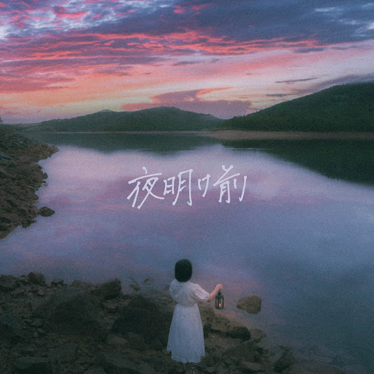

ATARAYO - 夏霞
나츠가스미
(여름안개)

1st EP - 夜明け前
요아케마에
(새벽녘)
空の青さに目を奪われて
소라노 아오사니 메오 우바와레테
(하늘의 푸르름에 시선을 빼앗겨)
足元の花に気付けないまま
아시모토노 하나니 키즈케나이 마마
(발밑의 꽃을 알아채지 못한 채)
懐かしい風が頬を掠めて
나츠카시이 카제가 호호오 카스메테
(그리운 바람이 뺨을 스치고)
君の香りを今も想ってる
키미노 카오리오 이마모 오못테루
(너의 향기를 지금도 떠올리고 있어)
ねぇ 今更になって思い出す
네- 이마사라니 낫테 오모이다스
(있잖아 이제 와서야 생각나)
色のない世界残る香りに
이로노 나이 세카이 노코루 카오리니
(색 없는 세상에 남은 향기에)
後悔ばかりが募ってゆく
코-카이 바카리가 츠놋테 유쿠
(후회만이 쌓여가)
忘れられないと泣くくらいなら
와스레라레나이토 나쿠 쿠라이나라
(잊을 수 없다며 울 바에는)
ただ僕らを包めよ夏霞
타다 보쿠라오 츠츠메요 나츠가스미
(그냥 우리를 감싸 줘 여름 안개여)
さよならが痛いのは
사요나라가 이타이노와
(이별이 아픈 건)
苦しいほど知ってるのに
쿠루시이 호도 싯테루노니
(괴로울 정도로 아는데도)
あの儚く散る花火の下で
아노 하카나쿠 치루 하나비노 시타데
(그 덧없이 지는 불꽃놀이 아래서)
馬鹿みたいに永遠を誓った
바카미타이니 에이엔오 치캇타
(바보같이 영원을 맹세했어)
今更 思い出すなよ
이마사라 오모이다스나요
(이제 와서 떠올리지 마)
あの夜君が (君が) 僕に零した (零した)
아노 요루 키미가 (키미가) 보쿠니 코보시타 (코보시타)
(그날 밤 네가 (네가) 내게 흘렸던 (흘렸던))
痛みの意味も (意味も) 今なら分かる
이타미노 이미모 (이미모) 이마나라 와카루
(아픔의 의미도 (의미도) 지금이라면 알 것 같아)
気がするんだ
키가 스룬다
(느낌이 들어)
Ooh oh yeah
우- 오- 예-
(Ooh oh yeah)
きっと今なら
킷토 이마나라
(분명 지금이라면)
きっと今なら
킷토 이마나라
(분명 지금이라면)
僕らは そう願った
보쿠라와 소- 네갓타
(우리들은 그렇게 바랐어)
思い出せないと泣くくらいなら
오모이다세나이토 나쿠 쿠라이나라
(떠올릴 수 없다며 울 바에는)
ただ僕らを包めよ夏霞
타다 보쿠라오 츠츠메요 나츠가스미
(그냥 우리를 감싸 줘 여름 안개여)
さよならが痛いのは知っていた
사요나라가 이타이노와 싯테이타
(이별이 아프다는 건 알고 있었어)
それでも僕らは
소레데모 보쿠라와
(그래도 우리들은)
あの儚く散る花火の下で
아노 하카나쿠 치루 하나비노 시타데
(그 덧없이 지는 불꽃놀이 아래서)
馬鹿みたいに永遠を誓った
바카미타이니 에이엔오 치캇타
(바보같이 영원을 맹세했어)
その日々さえ愛おしい
소노 히비사에 이토-시이
(그 나날조차 사랑스러워)
愛おしい 愛おしい日々
이토-시이 이토-시이 히비
(사랑스러운 사랑스러운 나날)
また僕ら色付く日々に
마타 보쿠라 이로즈쿠 히비니
(다시 우리 물들어가는 나날에)